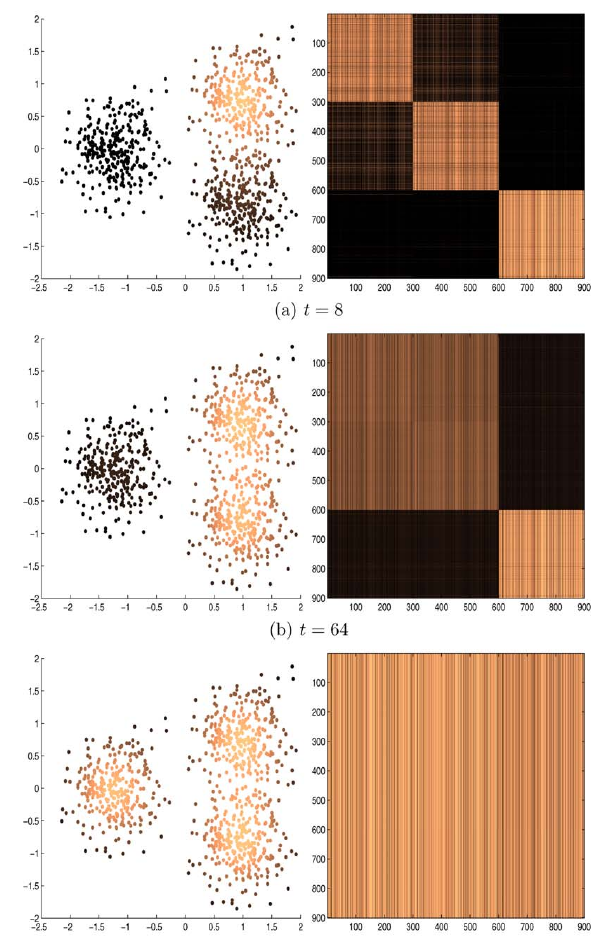
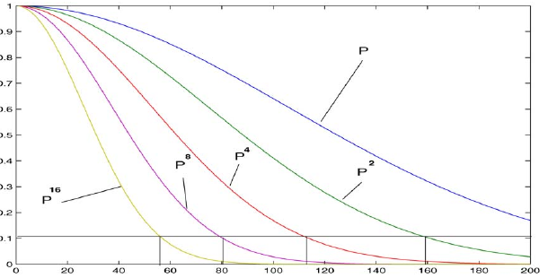
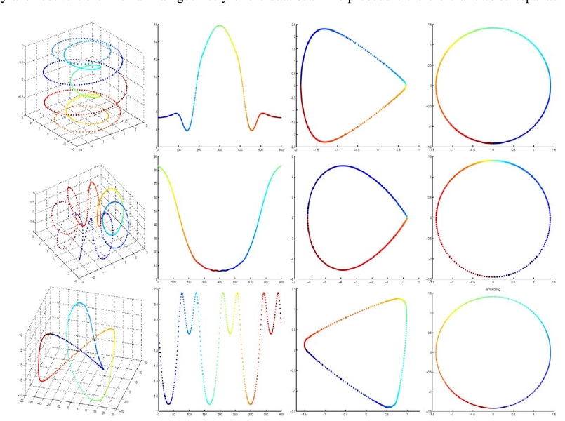

May 15, 2026
Coifman and Lafon’s Diffusion Maps is a foundational account
of how local affinities can be normalized into a Markov diffusion,
powered forward in time, and read spectrally as both a distance and a
coordinate system (Coifman and Lafon 2006). Its
importance for conductance and kernel Laplacian work is not merely that
it uses a graph: it explains exactly how a symmetric nonnegative kernel
becomes a row-stochastic transition operator, why diffusion distance
compares multi-step connectivity rather than ambient Euclidean
separation, and how powers of the eigenvalues suppress small-scale
oscillatory modes. The paper is also one of the clearest warnings that
graph normalization is not a technicality. Through the parameter \(\alpha\), it shows how a kernel graph can
retain sampling-density effects, describe Fokker–Planck dynamics, or
recover the Laplace–Beltrami heat operator on the underlying geometry.
For SIMODS and gflow, the paper is best read as a template
for planned kernel-conductance diffusion comparators, not as a direct
description of the current overlap-density smoother.
The paper begins from a simple but powerful modeling decision. A data set is represented by a nonnegative symmetric kernel \(k(x,y)\), interpreted as a local affinity between two points. This kernel is not yet a diffusion. It becomes one only after the degree \[d(x) = \int_X k(x,y)\,d\mu(y)\] is used to row-normalize the kernel, \[p(x,y) = \frac{k(x,y)}{d(x)}.\] The resulting operator \(P\) averages a function over neighbors according to the transition probabilities \(p(x,y)\). In finite graph language, \(P\) is a Markov matrix; in kernel language, it is a normalized integral operator. This normalization step is the hinge of the paper: edge affinities become probabilities, powers \(P^t\) become multi-step random walks, and spectral coordinates become a geometry of connectivity.
That move is especially relevant for conductance-based graph smoothing. If one calls \(k(x,y)\) a conductance-like weight, it is only by analogy: Coifman and Lafon use the language of affinity, kernel, and Markov transition, not electrical conductance. Still, the same operational distinction matters. A raw edge weight, a row-stochastic transition probability, and a symmetric normalized Laplacian are different objects, even when they are algebraically related. The paper is valuable because it keeps those objects connected while making their roles explicit.
The intended setting is broad: finite point clouds, weighted graphs, or samples from a manifold embedded in a high-dimensional Euclidean space. The reader needs only a few background ideas. A kernel is a function that assigns weights to pairs of data points. A Markov chain is a stochastic process whose rows sum to one, so each row gives transition probabilities from one point to the rest of the data. A graph Laplacian or normalized Laplacian measures variation across graph edges, and its low eigenvectors are smooth functions on the graph. The Laplace–Beltrami operator is the continuous analogue on a manifold, and its heat semigroup describes diffusion over the manifold.
The paper’s conceptual contribution is to connect these ideas without collapsing them. A local kernel gives a graph. Degree normalization gives a random walk. Reversibility gives a usable spectral theory. Powers of the Markov operator accumulate local transitions into a multiscale geometry. The leading eigenvectors then become coordinates, but they are coordinates for the diffusion geometry, not simply for the original ambient coordinates.
Given a symmetric nonnegative kernel \(k\), Coifman and Lafon define a Markov operator \(P\) whose \(t\)th power has kernel \(p_t(x,y)\). The quantity \(p_t(x,y)\) is the probability that a random walk starting at \(x\) reaches \(y\) in \(t\) steps. This makes \(t\) both a time parameter and a scale parameter: small \(t\) stays near the local graph, while larger \(t\) integrates many local moves and reveals coarser connectivity.

The diffusion distance compares the entire \(t\)-step transition profile from two starting points: \[D_t^2(x,y) = \int_X \left(p_t(x,u)-p_t(y,u)\right)^2 \frac{d\mu(u)}{\pi(u)},\] where \(\pi\) is the stationary distribution. Two points are close when random walks started from them see the rest of the data in nearly the same way. This is a connectivity distance, not a shortest-path or coordinate distance. It therefore treats many parallel paths as evidence of closeness and is less sensitive to a single noisy bridge or a single distorted ambient coordinate.
Because the chain is reversible, \(P\) can be analyzed spectrally. If \(P\psi_\ell=\lambda_\ell\psi_\ell\) and \(1=\lambda_0>|\lambda_1|\ge |\lambda_2|\ge \cdots\), the paper derives \[D_t^2(x,y) = \sum_{\ell\ge 1} \lambda_\ell^{2t} \left(\psi_\ell(x)-\psi_\ell(y)\right)^2.\] The diffusion map keeps the leading terms, \[\Psi_t(x) = \left( \lambda_1^t\psi_1(x), \lambda_2^t\psi_2(x), \ldots, \lambda_s^t\psi_s(x) \right),\] with \(s\) chosen so omitted modes are small at time \(t\). Euclidean distance in this coordinate system approximates diffusion distance. This is the paper’s central embedding theorem in practical form: eigenvectors are useful not because eigenvectors are intrinsically magical, but because the weighted coordinates preserve a Markov diffusion metric.
The paper does not present itself in modern graph signal processing language, so the phrase “low-pass filter” should be treated as synthesis rather than as the authors’ terminology. The underlying mechanism, however, is explicit. When a function is expanded in the eigenbasis of \(P\), applying \(P^t\) multiplies the coefficient of \(\psi_\ell\) by \(\lambda_\ell^t\). Modes with eigenvalues near one survive for a long time; modes with smaller magnitude eigenvalues decay rapidly. Since the paper also identifies leading eigenfunctions as low-frequency content and later eigenfunctions as increasingly oscillatory, the graph-smoothing interpretation is natural: \(P^t\) is a diffusion smoother whose transfer function is \(\lambda^t\).

This point matters for SIMODS because it separates three possible uses of the same spectral machinery. One can smooth a signal by applying \(P^t\); one can embed points by retaining diffusion coordinates; or one can solve an equivalent symmetric normalized eigenproblem after reversible symmetrization. These are related, but they are not the same comparator. For a smoother, the row-stochastic diffusion \(P^t\) is the most direct Coifman–Lafon analogue. For a reduced representation, the diffusion coordinates are the natural analogue. For numerical linear algebra, the symmetric normalized form may be the convenient implementation.
Section 3 is the part of the paper most relevant to density-sensitive graph construction. For Euclidean or manifold data, the base kernel is written \[k_\varepsilon(x,y) = h\left(\frac{\|x-y\|^2}{\varepsilon}\right),\] and the empirical density estimate is represented by \[q_\varepsilon(x) = \int_X k_\varepsilon(x,y)q(y)\,dy.\] Coifman and Lafon then introduce the anisotropic family \[k_\varepsilon^{(\alpha)}(x,y) = \frac{k_\varepsilon(x,y)} {q_\varepsilon(x)^\alpha q_\varepsilon(y)^\alpha},\] followed by a second degree normalization to obtain \(p_{\varepsilon,\alpha}\) and \(P_{\varepsilon,\alpha}\). This two-stage normalization is essential. The first stage adjusts the affinity for sampling density; the second stage makes the result a Markov operator.
The special cases are the most useful way to remember the theory. At \(\alpha=0\), the construction reduces to the classical normalized graph Laplacian behavior for isotropic weights, and the limiting operator retains a density-dependent term. At \(\alpha=1/2\), the limit is tied to Fokker–Planck and Langevin dynamics, so the density describes a stochastic process with drift. At \(\alpha=1\), the sampling density is removed from the infinitesimal generator, and the construction recovers the Laplace–Beltrami operator and its Neumann heat kernel limit.

There is one caution that should remain visible in any later synthesis. Section 3.4 is headed “The case \(\alpha=1\): approximation of the heat kernel,” Proposition 3 states the limit for \(L_{\varepsilon,1}\) and \(P_{\varepsilon,1}^{t/\varepsilon}\), and the surrounding prose says that by setting \(\alpha=1\) the infinitesimal generator becomes the Laplace–Beltrami operator. The first sentence of the subsection, however, says “when \(\alpha=0\).” Internal consistency strongly suggests an apparent PDF typo, not a new mathematical claim. It should be treated as an audit caution rather than cited as a formal erratum.
The main figures are unusually instructive because each one isolates a different role of the construction. Figure 1 shows diffusion time as scale. Figure 2 reorganizes images of the text “3D” by the first two nontrivial eigenvectors, demonstrating that diffusion coordinates can recover latent viewing-angle parameters. Figure 3 shows eigenvalue powers suppressing smaller modes. Figure 4 shows that density normalization changes the geometric object being recovered. Figure 5 extends the idea to a task-specific, function-driven diffusion on the sphere, where diffusion is encouraged along level-set directions of a chosen function. Figure 6 shows a noisy helix embedded as a circle, illustrating the paper’s qualitative robustness claim when the diffusion scale is larger than the perturbation.
The theory is correspondingly layered. The early sections establish the finite or compact reversible Markov framework, stationary distribution, and diffusion distance expansion. Appendix A supplies the symmetrization that makes spectral analysis precise: the row-stochastic operator is not symmetric, but detailed balance makes it conjugate to a symmetric kernel. Section 3 and Appendix B then study manifold limits for \(P_{\varepsilon,\alpha}\) and its generator \[L_{\varepsilon,\alpha} = \frac{I-P_{\varepsilon,\alpha}}{\varepsilon}.\] Section 5 adds finite-sample and perturbation cautions. The sample size must grow rapidly as \(\varepsilon\) shrinks, with unfavorable dependence on intrinsic dimension, and the perturbation analysis requires the spatial scale \(\sqrt{\varepsilon}\) to remain larger than the noise size. The paper’s robustness claims should therefore be read as scale-dependent, not absolute.
The first transfer risk is kernel choice. The authors emphasize that the kernel encodes prior local geometry and should be guided by the application. The diffusion machinery cannot rescue a kernel whose local notion of affinity does not match the scientific question.
The second risk is confusing density with geometry. A graph built from ambient proximity usually encodes both the support of the data and the sampling density on that support. The \(\alpha\) family exists precisely because different normalizations answer different questions. For SIMODS, this is a warning that overlap counts, neighborhood sizes, and sample density can affect a smoother’s spectrum even when the biological question is phrased as a geometric one.
The third risk is overextending the low-pass language. It is fair to say that the paper provides the spectral mechanism behind a low-pass graph diffusion: \(P^t\) damps small-eigenvalue modes and keeps slowly varying modes. It is not fair to claim that Coifman and Lafon provide a modern graph signal processing filter-design framework. That interpretation belongs to the present review and to later graph signal processing literature.
gflowFor SIMODS, the paper supplies a clean comparator architecture: \[\hbox{local affinity } k \longrightarrow \hbox{degree normalization} \longrightarrow P \longrightarrow P^t \hbox{ smoothing or diffusion coordinates}.\] If a future comparator starts from edge lengths, it should first define a symmetric nonnegative affinity, such as a Gaussian or another monotone kernel of length, then normalize to a Markov operator. Only after that step is it a Coifman–Lafon-style diffusion. A symmetric normalized Laplacian version may be mathematically equivalent for eigen-computation under reversibility, but the review should name whether the implemented object is a transition operator, a Laplacian, or an embedding.
The paper should not be used to retroactively relabel the current
fit.rdgraph.regression() smoother as a diffusion-map
method. Per the project audit note, current gflow semantics
treat weight.list values as positive edge lengths for
neighborhood ordering and truncation, and the present smoothing
conductance is overlap-density/Riemannian-complex based, not direct
length conductance, Gaussian affinity, row-stochastic transition
probability, or a diffusion-map kernel. Coifman and Lafon are most
relevant as a principled alternative and diagnostic baseline.
The strongest concrete implication is a density-sensitivity test. A planned kernel-conductance comparator could compare \(\alpha=0\) and \(\alpha=1\) on the same graph family whenever \(q_\varepsilon\) can be estimated. If the two answers differ, the difference is not a nuisance: it identifies how much of the smoother is responding to sampling density rather than to the inferred geometric support. That is exactly the kind of distinction the diffusion maps paper was designed to make visible.
The reusable elements are the Markov normalization pipeline, the
diffusion distance formula, the eigenvalue-power explanation of
multiscale smoothing, and the \(\alpha\) normalization as a density audit.
In later synthesis, this paper can support claims that (i)
row-normalized kernels define reversible diffusions under standard
symmetry assumptions, (ii) diffusion maps embed points so Euclidean
distance approximates multi-step Markov connectivity, (iii) powers of
\(P\) provide a derived low-pass
smoothing mechanism, and (iv) density normalization changes the limiting
continuous operator. It should not be cited as evidence that all graph
weights are conductances in the electrical sense, that current
gflow overlap-density smoothing is a diffusion map, or that
low-pass graph signal processing terminology appears explicitly in the
2006 paper.
Primary source: the local canonical 26-page PDF, . Archival
scaffolding: the local Markdown memo and audit . Figure screenshots are
internal-review captures listed in ; the embedded figures in this review
use relative paths of the form . The low-pass language and
SIMODS/gflow mapping are derived synthesis, not direct
terminology or claims from Coifman and Lafon.